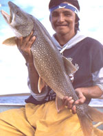
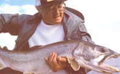
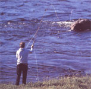
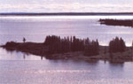
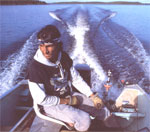

After 10 minutes with the big lake trout on my line, it seems as likely that I will soon go overboard to join it in its dark, watery world as it does that it will finally consent to join George Merasty, Nueltin Lake guide, and me in our bobbing aluminum outboard boat.
But suddenly, as my hands are beginning to cramp, the fish concedes, sliding slowly upward through 70 feet of black water to the surface, still fixed to the single, barbless hook of my giant red-and-yellow lure.
"This one's worth measuring," Merasty announces, excitement in his soft Cree voice. This time, instead of jiggling the hook to free the fish at boatside, as he's done with each of the half-dozen 10 to 14-pounders caught earlier in the day, he gently nets it aboard. Working quickly, he lays the fish on the stem seat, runs a cloth measuring tape from nose to tail (37 inches) and around its middle (20 inches), then consults a length-girth chart taped below the gunwale and, without ever weighing it, declares this trout to be an 18-i/2-pounder, just one and one-half pounds shy of the 20 pounds that would rate it a "trophy" and earn me a Manitoba Master Angler award.
Author Jack Hope gets into the swing of things at Nueltin Lake, which, among other modifications in angling behavior, requires gentle cradling of a caught fish rather than more typical "manhandling." Barbed books are prohibited, as is the use of the 'Yaw scale" for weighing.
To me, this lovely, glistening, hook-jawed creature looks half as big as our boat. Hunter-devourer at heart, my first instinct is to leap and pin it down. But there is no possibility of that, not according to the unusual, trendsetting laws on this lake in central Canada. Nor am I even allowed to seize my prize by the gills and hoist it aloft in the traditional manly pose. Instead, Merasty cradles the fish almost tenderly-one hand around the base of the tail, a forearm supporting its midsection-holds it for maybe go seconds of picture-taking, then kneels and carefully releases it into the water. The big trout pauses only an instant, apparently unharmed by its time on the line and in our air. Then, with a sweep of its massive tail, it is gone, back to the depths.
Only later, once my lure is trolling again, do I begin to grumble: I would like to have kept that fish, I lament, partly to Merasty but mostly to the atmosphere. Its thick orange fillets would have fed a dozen friends back home *in New York City, would have held them captive while I described every bend in the rod in my triumph over this great fighting animal. Mounted on my wall, the stuffed beast would have served as a constant reminder of this once-in-a-lifetime fishing trip. But, due to the avant-garde policies here at Nueltin Lake, which compel the release of every large trout, northern pike and grayling, all this is denied me.
George Merasty is not without empathy for the angler who wants to take home a real trophy. But, he reminds me, it's precisely Nueltin's prohibition against the harvest of all large fish year after year that enables this 1,200-square-mile lake on the border between Manitoba and the Northwest Territories to produce more trophy trout per angler per year dim any other lake in North America. He grins. If I truly regret having released my big trout, he says, then I can return in 20 years to this very same spot where-since lake trout often live 60 or 70 years-this very same fish, grown to world-record size, win undoubtedly be waiting for me.
For more than a century it has been the standard angling ethic in North America that while a fisherman may keep all or most of the big fish he catches, he is obliged to "throw back the little ones"-all fish below a certain minimum size. This ethic, stiff the basis for the vast majority of our sport-fishing laws, is founded partly on the seeming logic of enabling the little ones to someday replace their parents in both size and spawning capacity. And it is founded, as well, on traditional notions of sportsmanship and angler's honor: Small fish are "dumb," easy to catch and award no status to the fisherman; but big fish are "smart," worthy opponents, and so the angler is entitled to bring them home to show off to admirers.
But there is ample evidence that angling laws based on this simple minimum-size standard were never adequate for meeting the pressures of sportfishig. Beginning early in this century, minimum-size regulations led to the rapid-perhaps permanent--depletion of large native fish in the more popular freshwater lakes and streams of the eastern U.S. In New York State, for example, the largest brook trout ever caught (eight pounds, eight ounces) was taken in 1908; the largest northern pike (46 pounds, two ounces), in 1940. Nothing even approaching the size of these impressive specimens has been taken in the last several decades.
Sportfishing pressure has increased enormously since midcentury. Not only has the number of anglers grown exponentially, but fishing has become an increasingly whitecollar sport. It's not at all unusual, today, for an angler to spend several thousand dollars for a week's fly-in trip to one of the continent's more remote lakes or rivers and another several thousand on sophisticated gear ranging from high-tech rods and reels to electronic "fish-finders." Small wonder, then, that freshwater fishermen from Florida to northern Canada are discovering that the trophy-sized fish commonly caught 30 or 20 or even 10 years ago can no longer be found. And in the most heavily fished bodies of North American water, where minimum-size laws have long been in effect, there are virtually no big fish at all-ordy "die little ones."
But none of this should surprise us, according to Don Toews, former chief of sportfishing in Manitoba's Department of Natural Resources. "The basic assumptions of minimum-size thinking during the last 100 years are strictly from Mother Goose," he asserts. "It sounds so ideal, so lovely, that as we catch all the big fish, even trophy fish, the little ones will simply grow up and replace them, one for one. But that's just not the way it works."
The Nueltin experience involves more than trolling for lake trout and pikefroma boat.Here Hope fly-fishes forArctic grayling from a spot along the banks of nearby WindyRiver.
In any natural body of water, Toews points out, the population distribution of fish can be represented by an exponential curve, with small fish typically making up at least go% of the population. But protecting these already abundant small fish with a minimum-size law is a little like refusing to thin out densely crowded carrots or radishes in a vegetable garden. There is enough food for only a fraction of them. If none are removed by angling or other predation, then all remain stunted, growing only slowly. In addition, there is genetic evidence from streams controlled by minimum-size laws that fish tend to remain small and grow slowly because the larger, faster-growing fish are regularly selected out of the population, and into the fisherman's creel.
But any natural lake or river contains only a tiny proportionless than 1%-of truly trophy-sized fish. Not only are these the bass, pike and trout that anglers most want to catch; they're also the fish with the greatest potential for reproducing more big fish. In North American waterways long regulated by minimum-size laws, this very limited number of large fish have essentially been angled out, leaving these lakes and rivers with little or no genetic potential for producing trophy-sized fish 'in the future.
"Clearly," says Toews, "it's these large fish that most need protection. I don't know why it's taken us so long to come to grips with this, unless its part of our frontier mentality, our naive belief that there will always be more. But there's no doubt that angling laws will have to change direction, and quickly, if we expect to have any big fish left in 20 years." And the protection Toews calls for involves a group of prohibitions predictably called maximum-size restrictions, which were invoked at Nueltin Lake beginning in 1978, four years after it was first formally opened to flyin sportfishing.
Working closely with forward-looking "lake managers," first Bill Bennett, now Garry Gurke (private, on-site entrepreneurs who license the lake from the province), Manitoba Sport Fisheries has used the lake as a proving ground for protective angling policies. While a variety of restrictions more sophisticated than minimum size have long been used in several provinces and states-notably, "catch and release" laws on limited stretches of trout streams-Manitoba's big-fish protection program is the most successful and comprehensive *in North America.
At lake manager Bennett's initiation and Sport Fisheries' ready acceptance, the number of trophy-sized lake trout an angler could take home from a one-week trip was sharply reduced, in 1978, from five fish to one. But Nueltin anglers did not complain: The largest trout caught and brought home 'in the next several years weighed between 40 and 55 pounds. And, more important, every angler at the lake landed an average of three 20-pound fish a week-far and away the best record in North Arnerica-and took home one of these impressive trout.
As the lake's reputation grew, so did its clientele, from 100 anglers in the 14-week summer season in 1978 to 480 *in 1985. But with a one-trophy-per-angler rule, that meant 480 big lake trout were removed from Nueltin each year. It was too many to guarantee a future supply of equally big trout, Bennett and Sports Fisheries feared, even in this large lake. So in 1986 the rules were tightened again 'in a kind of quantum leap, and Nueltin became Canada's first fly-in lake with a "no trophy" policy: Today, while fishermen and guides may kill and eat all the "little" fish they need for the daily, artery-clogging ritual known as "shore lunch"-trout, potatoes and onions fried in a full pound of lard-every fish larger than eight pounds must be returned, unharmed, to the water.
Additional safeguards were put in place. Since livereleased fish, especially big fish, can be *injured or killed if not lifted and released properly, all guides at Nueltin are trained both in gentle handling and in resuscitation-learning to sweep the fish slowly back and forth through the water to restore oxygen to its gills after a long struggle on the line. They are also instructed to tactually keep anglers from lifting fish carelessly or from posing overly long for trophy shots. In addition, while an angler may use any lure he wants except for live bait, all multiple hooks must be removed and replaced with a barbless single hook, provided by the lodge. Even on tiny three-eighths-inch dry flies used for grayling, the barb must be crimped down. This "barbless" rule, initiated at Nueltin in 1984, was created to ensure quick and easy release without the need to lift fish from the water. Nor may any fish, even a possible world record, be weighed with the traditional, damaging jaw scale. Instead, the length-girth conversion system that Merasty used to calculate the weight of my trout is mandatory.
Surely the most subtle of Nueltin's policies are designed to lead anglers away from temptation. For as every guide in the North (or South) knows, otherwise honorable men are fully capable of concocting creative ways to break or bend the law instants after landing a giant fish. So, to forestall any deliberate "accident" that results in a fish's on-board death, Nueltin created the simple rule-made known to all anglers in advance-that any fish caught and accidentally killed will become the property of the lake manager and cannot leave the premises. To underscore its point, Nueltin makes the standing offer of $5,000 cash to any angler who lands a world-record fish and returns it live to the lake.
The wisdom of Nueltin Lake's regulations is demonstrated not only by its fantastic trophy-fish production but by the slowly spreading adoption of its policies in recent years. In Manitoba itself, and *in Nueltin's wake, literally hundreds of lakes and rivers are now governed by no-trophy or one-trophy rules. And in April 19go, Manitoba became the first province or state in North America to pass a law requiring barbless hooks for all its sportfishig. Several states and provinces including Wyoming, Montana, Minnesota and Ontario are now basing most of their sportfishing laws on policies specifically planned to protect big fish. Along the Atlantic coast, from North Carolina to Newfoundland, maximum-size laws now regulate the taking of two imperiled species, striped bass and Atlantic salmon. And the laws' growing acceptance is based not only on the biological truth that big fish (or big humans or big salamanders) tend to produce the biggest offspring but also on the simple fact that a trophy trout or walleye or black bass caught and returned to the water by one fisherman remains there to be caught by another.
But widespread and successful 'installation of maximum-size regulations on North American waters may depend less on the biological wisdom of the policies themselves than it does on the adaptability of fishermen and fisheries managers who have been jointly conditioned for a century or more to throw back the little ones. In addition, our species is conditioned by 5 million years of predatory experience: Surely we did not get to where we are today-the very top of the biological chain-because our caveman ancestors made it a practice to release the biggest fish caught during the day.
Indeed, lake manager Garry Gurke confirms that he's encountered a handful of potential customers who refuse to fish at Nueltin when they learn they cannot bring home a trophy. But, he says, the vast majority of today's sophisticated anglers not only appreciate and embrace Nueltin policies but, by putting moral pressure on their peers, help to enforce them.
And that was surely borne out by my experience one evening at Nueltin when, after several scotches all around, I complained once again about having to release My 22-pound lake trout (it had grown from the 18-1/2 pounds it weighed that morning). Immediately I was set upon by virtually every angler in camp as if the complaint itself were some kind of moral transgression.
"Jack," said Frank McCloskey, a retailer from Bradford, Ontario, "why on earth would you want to kill one of the big fish from this lake? Don't you realize some of them are old enough to be your father? Have you no respect for age?"
But I was able to turn this argument aside with the observation that the fish I'd released that morning could hardly be my elder since it weighed only 26 pounds. And besides, it bore no resemblance to my father.
"Jack," scolded Kevin McAllister, a chiropractor from Oshawa, Ontario, "think of it this way. If Northern Dancer were a fish, would you kill him just to eat his meat? just think of the genes you'd be destroying!" I refuted this syllogism too, with the simple comment that I deplored horse racing, let alone eating the flesh of its participants.
"But Jack," finally said Michael Baronian, an accountant from Robbinsville, New Jersey, who himself had that day caught and released a 29-pound trout (almost as large as mine), "you talk all the time about your two-year-old, Paul? Well, if you and I take every big fish out of this lake, out of every lake, then where is your son going to fish? What is he going to catch?"
And there, I knew, he had me.
|
 PAUL VON BAICH The Nueltin experience involves more than trolling for lake trout and pikefroma boat.Here Hope fly-fishes forArctic grayling from a spot along the banks of nearby WindyRiver. |
 PAUL VON BAICH Three fishing camps are in operation at Nueltin Lake: Windy River to the north, Tree-line Lodge to the south and, close to the peninsulas shown here, the Narrows near the middle |
 PAUL VON BAICH Guide George Merasty has put the outboard at full throttle. Since Nueltin Lake is more than 120 miles long, getting to a good fishing site from any of the three camps will typically involve traveling 30 Or 40 miles one way. That means motoring along at a good clip. |
|
 PAUL VON BAICH |
 PAUL VON BAICH |
|